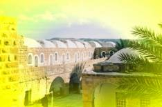
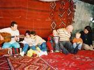
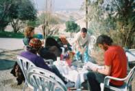
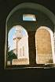
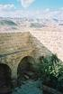
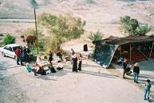

transforming CHECKPOINTS into MEETING-POINTS
| home |
| about |
| work |
| story |
| team |
| schedule |
| links |
|
ALL NATIONS CELEBRATION IN THE DESERT 
|
|
On the eve of Tu B'shvat, the Jewish tree festival, and just after Id El Adha, the Muslim feast of sacrifice, the All Nations Team had organized a desert festival at Prophet Moses' memorial place in the Judean Desert. Two weeks having passed, we are still thinking and talking about the gathering in the desert. Many stories and reports of the most extraordinary kind have reached us from friends who were there with us – it seems like something has happened to all of us that goes beyond what any planned program could have achieved. And we are now coming to understand that it is namely this flair, this essence that is so special about the All Nations Café Events: the small scenes of intimacy that happen when nobody pays attention, the sudden sensation of open hearts meeting, precious moments, sometimes lasting no longer than a second, and yet reaching deep down the hidden beauty of details...a collage of such stories were the two days in the desert... The light festival atmosphere will always be with us, kept in our memories, an open space to go back to whenever we feel like it. New threads of friendship have been woven in a web of authenticity that reaches out across borders and fences. Another step in the creation of a new Middle East has been made … and others are to follow. For us as the organizers there was even more to be discovered behind the scenes. This event is only one in a series of All Nations Celebrations – and every single one of them is a new adventure, experimental, open for the spontaneous, inviting the unexpected. Teaching us a new lesson about how to deal with difficulties on the way, which direction to try next concerning food, transportation, program and the money that makes events like this possible. We find ourselves in a very exciting and fertile learning process through this and consider it a very significant part of the All Nations Café initiative: A process, in fact, that we want to openly share with you. |
DONATE
CONTACT US
|